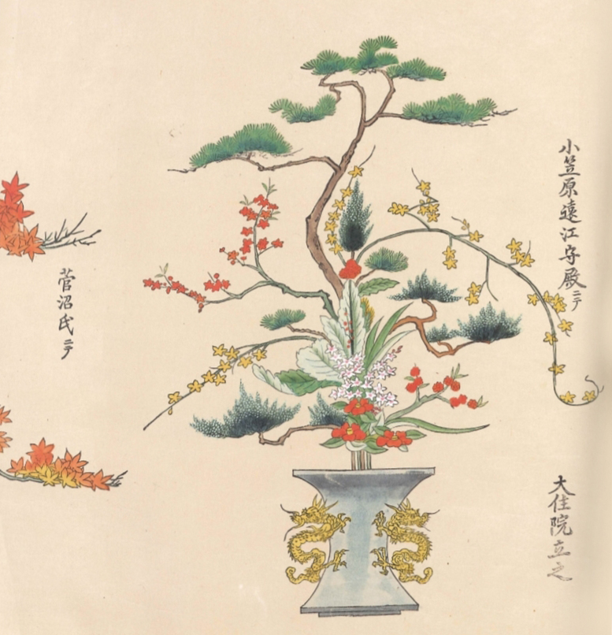

About
Ikenobo
The history of Ikenobo starts at the Rokkakudo Temple. This temple was founded by Prince Shotoku about 1400 years ago. In this temple, priests made floral offerings at the Buddhist altar of this temple. They lived near a pond (the Japanese word “ike”), in a small hut (called “bo”). For this reason, these priest were called, “Ikenobo.”
In 1462 the name Senkei Ikenobo first appeared in historic records as “master of flower arranging.” Senno Ikenobo, who was active in the late Muromachi period (mid-16th century), later established the philosophy of ikebana from the Ikenobo teachings called “Senno Kuden.”
Senno Ikenobo taught that buds and withered flowers have just as much life and beauty bloomed flowers. “By arranging flowers with reverence, one refines oneself.” This is the spirit of Ikenobo Ikebana.
Our Mission
Desert Ikenobo’s mission is to inspire by sharing the beauty and elegance of this ancient art. Our company makes Ikenobo so easy to learn that it will become source of inspiration and grounding among the everyday hustle, bustle, and uncertainty that we all encounter in this modern life. Through our knowledgeable teaching staff, we bring this ancient Japanese art to the Arizona desert.